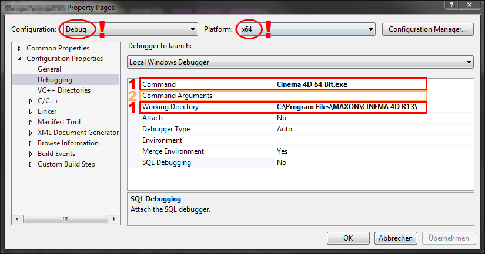
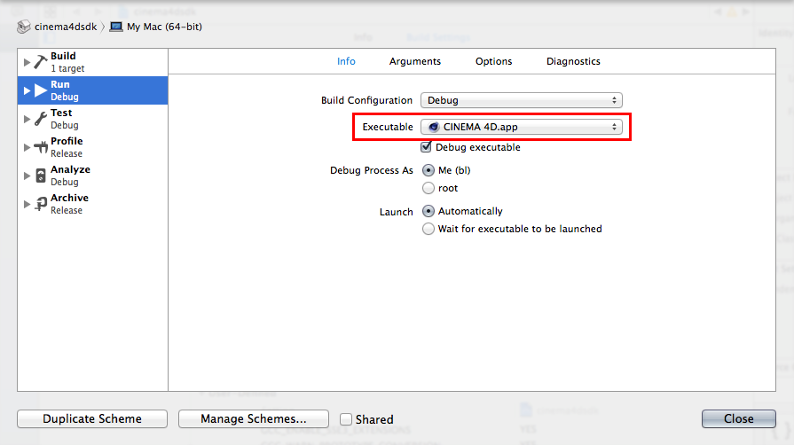
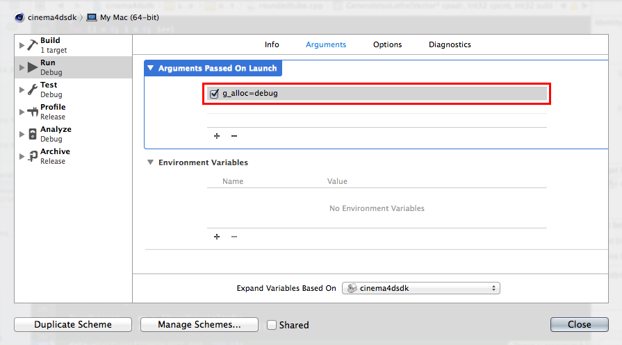
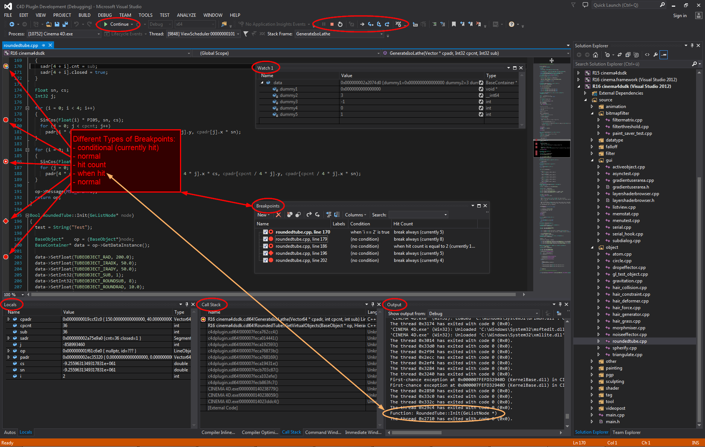
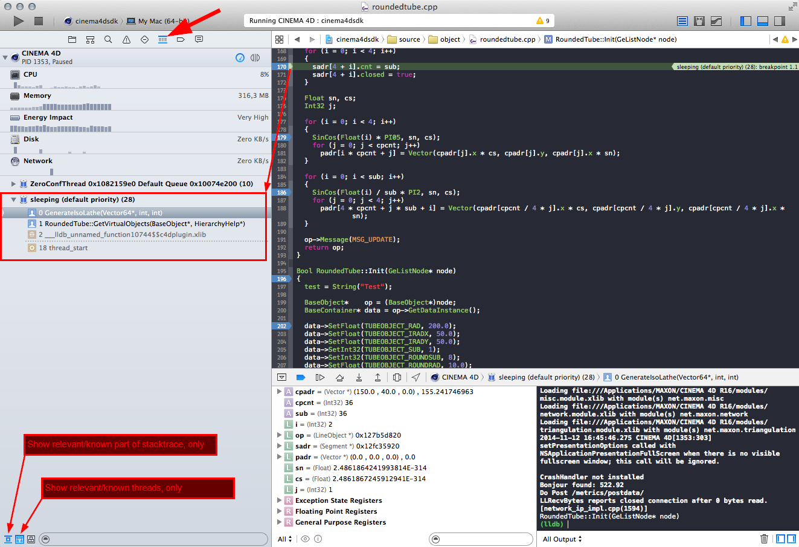
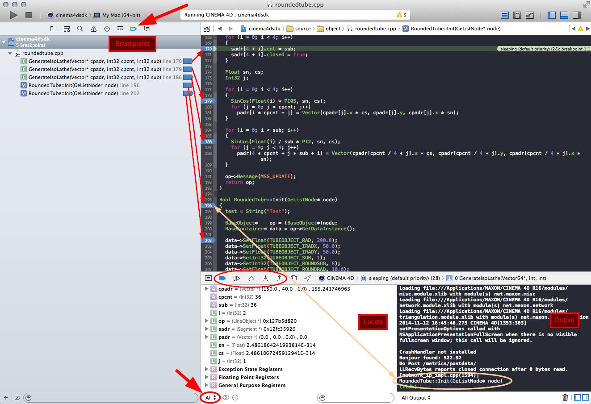
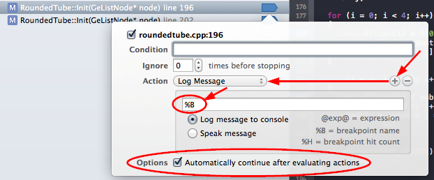
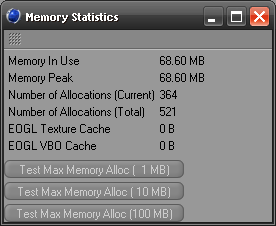
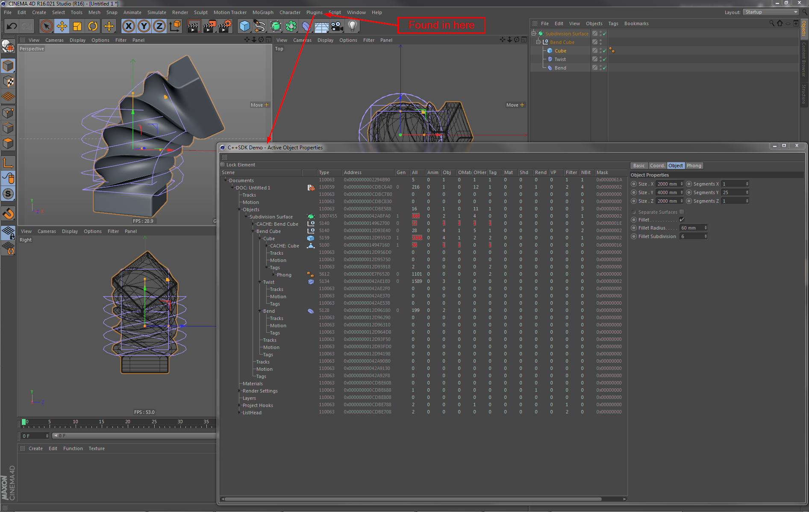

At first you'll want to configure your project for debugging. Most of it is already set correctly by default (assuming you are using the project files delivered with the SDK). In order to have Cinema 4D started, once you click the "Debug" button, you need to set the path to the Cinema 4D executable.
Depending on your Cinema 4D version, operating system and the IDE in use it's a bit different.
Enter the project properties and go to Debugging settings, like so: Menu: Project → Properties → Configuration Properties → Debugging
For Cinema 4D R15 and following it is sufficient to simply select your Cinema 4D executable for Command. The result will probably look like this ..\..\Cinema 4D 64 Bit.exe (R15) or ..\..\..\Cinema 4D.exe (R16), although the path may depend on your system and project location. Especially with R16 where you can move your projects anywhere you like.
For Versions before Cinema 4D R15 it is suggest to use both options marked by 1 in the screenshot: Command and Working Directory. Unfortunately Working Directory can not be a relative path. But in order to make use of the Debug mode (explained next), you will need to have Working Directory point to the directory, where the Cinema 4D executable is located (absolute path, the trailing backslash is important) and only have the name of the Cinema 4D executable as Command, like it is shown in the following screenshot.

Debugging Command for Configuration: "All Configurations". As the executable differs for 32-Bit and 64-Bit version of Cinema 4D, you'll have to configure Platform Win32 in a second step, if you still need to build 32-Bit versions.Enter the scheme settings either via menu Menu: Product → Scheme → Edit Scheme... or a bit quicker via Cmd + <. At first one needs to note, that this is the place to switch between debug and release builds, which may be a bit confusing especially for developers who grew up with Visual Studio. Then choose Executable → Other... and select your Cinema 4D executable, like in the screenshot below.

You may want to start Cinema 4D itself in debug mode. In debug mode Cinema 4D will provide you with all kinds additional runtime information on a system console. For example valuable information on memory management, it will even warn you about memory leaks. Please note, this will slow down Cinema 4D considerably, so you may want to enable Debug mode temporarily only. An even better way would be to have special debug build targets, which additionally enables the debug mode.
Create an empty text file named c4d_debug.txt inside of the Cinema 4D program folder, next to your Cinema 4D executable. As long as you followed the Command and Working Directory setup before, it's that simple!
Add g_alloc=debug to your Commandline Arguments (marked 2 in the above screenshot) for Configuration: "Debug" and Platform: "All Platforms".
In Xcode's scheme settings change to the arguments tab. Add g_alloc=debug as argument, like in the screenshot below.

-debugg_alloc=debug in order to start Cinema 4D in Debug mode without the additional memory management information and memory leak detection g_logfile=[string]g_console=trueEven more command line options can be found in <C4D install dir>/resource/config.txt.
You may have seen downloads of TypeViewer for Visual Studio 2005 and 2010 in our development area. Good news for everybody, who's working with Visual Studio 2012+ and is developing with Cinema 4D SDK R15+. The functionality is seamlessly integrated into the project files. No additional work needed. It simply works. The same is true for Xcode.
You can significantly speed up your development turnaround times by creating a special start-up layout in Cinema 4D for your plugin development.
Menu: Script → Console... into your layout, e.g. have it docked on one side of your screen. This provides you with a quick overview on your debug output.plugin_dev.l4d as well as start-up layout.
Use GePrint in your plugin to show elementary messages/information to the user. For example a message on successful initialization plus version information could be printed to the script console. You should avoid to flood the script console, as the user might want to use the script console himself or other components want to have their info visible to the user as well. Since GePrint prints regardless of build target and Debug mode, it's less suited for debugging needs.
GeConsoleOut behaves a bit differently on Windows and Mac. On Windows it basically does the same as GePrint. Yet on Mac it prints to the debugger's output window as well.
As the name suggests, these functions are made for debugging. Mainly because the output can only be seen, when Cinema 4D is run in Debug mode. GeDebugOut comes in two flavors, the first works with Cinema 4D's String class (just like GePrint). The second works with format strings (C-strings with special placeholders to provide formatted output), as you might know them from ANSI-C and stdio-functions, like printf. Here you can use all the format strings known from the last mentioned stdio-functions. So you can do something like this:
GeDebugOut still does its job in release builds. If the user manages to start Cinema 4D in Debug mode, he will be able to see your output. Having this said, it should be clear that it uses CPU time in release builds as well.The name says all about its purpose. CriticalOutput is to be used in insolvable situations. Printing-wise it works much like the second GeDebugOut flavor, as it's using C-like format strings. Yet, there are some differences:
This is pretty much the same as second flavor GeDebugOut. Only difference is an automatically appended line-break.
Last but not least, DebugOutput will probably get your most used debug print function. It's main advantage, it does nothing in release builds. Neither will it reveal your output to a user running Cinema 4D in Debug mode, nor will it use any CPU time in a release build. If you are developing for R15 and above, it's suggested, you take a closer look at this function and try to get used to it. Additionally you can make use of OUTPUT_FLAGS to adjust it to your needs:
OUTPUT_DIAGNOSTICOUTPUT_WARNINGOUTPUT_CRITICALOUTPUT_NOLINEBREAKOUTPUT_HEADERDebugOutput to print anything in Cinema 4D versions ≥ R16, you need to add -debug to your Commandline Arguments. g_alloc=debug is not sufficient.| Cinema 4D | Debug Mode: On | Debug Mode: Off | ||||||||
|---|---|---|---|---|---|---|---|---|---|---|
| Location | Script Console | Debugger | Debug Console | Script Console | Debugger | |||||
| Build Target | Rel. | Dbg. | Rel. | Dbg. | Rel. | Dbg. | Rel. | Dbg. | Rel. | Dbg. |
GePrint | √ | √ | × | × | × | × | √ | √ | × | × |
GeConsoleOut | √ | √ | M | M | × | × | √ | √ | M | M |
GeDebugOut | × | × | √ | √ | √ | √ | × | × | × | × |
| Additional print methods with Cinema 4D ≥ R15: | ||||||||||
CriticalOutput | × | × | √ | √ | √ | √ | × | × | × | × |
DiagnosticOutput | × | × | √ | √ | √ | √ | × | × | × | × |
DebugOutput | × | × | × | ∗ | × | ∗ | × | × | × | × |
√: Output is visible ×: No output ∗: Output is configurable via OUTPUT_FLAGS M: Mac only | ||||||||||
To have all info in one place, you'll need the following functions to print your variables:
| Cinema 4D < R15 | Cinema 4D ≥ R15 |
|---|---|
String::ToReal | String::ParseToFloat |
String::ToLong | String::ParseToInt32 |
LLongToString | String::IntToString |
LongToString | String::IntToString |
RealToString | String::FloatToString |
PointerToString | String::HexToString |
MemoryToString | String::MemoryToString |

Above screenshot shows a typical debugging situation (here the rounded tube plugin from the SDK examples). You will want to have several windows docked to your debug layout and you should note, that there's more than just the average breakpoint.
if statement. In most cases, this is all you need, to trigger on the exact occasion of a bug.In general Xcode offers the same options as Visual Studio. Therefore it shall be enough to describe the differences.
Unfortunately there does not seem to be comfortable equivalents for Visual Studio's Watch Window and Data Probes. There is an option to watch memory areas, but Visual Studio's Watch Window seems much more versatile.
The screenshot below shows the call stack in Xcode. Note the small buttons in the lower left, which offer a very nice option to show only the relevant part of the stack. Nice feature.

In contrast to Visual Studio, Xcode has one breakpoint, which is vastly configurable and can do all the stuff (and more) described for Visual Studio. Lets look at Xcode's breakpoint manager.

A side note, while we are at it, note the small "All" button in the lower left of the "Locals" view. There you have the option to blend in global variables and even registers. Nice.
Obviously a breakpoint will be configured by Ctrl-clicking or right clicking and selecting Edit Breakpoint.... The screenshot below shows a configuration doing something similar to Visual Studio's "When hit..." breakpoint. Note that you have all the options to combine this with a condition or a "Hit Count" (Visual Studio speak, in Xcode it's the "Ignore" option).

Assertions are a good way to develop your code into a more stable product. In their simplest form, assertions can be used to trigger a breakpoint in a certain branch. Why would you want to do this? Well, first of all you may have code, that depends on certain prerequisites and/or assumptions. You can use an assertion to assure your assumptions are correct. Or you may not be sure, something is working the way you expect it to, again assertions can be used to notify you about wrong assumptions. And you can use assertions to mark code not yet completed. In this way you don't always have to watch your comments, but will have a notification mechanism, when such incomplete branches are hit.
For example you have an enumeration and a switch/case testing these cases. Typically you will have a default case, which catches everything not covered by your cases. This can be a good place for an assertion. Whenever you extend your enumeration, the debugger will get triggered as soon as a switch/case is hit, that was not yet adapted to the extended enum. Otherwise your plugin might stumble through the default case and might show wrong behavior. Depending on the wrong behavior this can be quite difficult to notice. It may even slip through into your release...
Or consider the following code. Admittedly bad code, but for the sake of demonstration in a few lines... you'll get the point:
Now you may call PrintSomeArray, forgetting all about your array's size. What will happen? Well, it depends... It depends on parameter idx of course. Large values will probably crash. Which in a weird way is good, as you will notice the bug. Values only slightly greater than SOMEARRAY_SIZE will most likely work, though. With these the function will print some memory content behind your array. This again may be uninitialized or initialized with some of your other data. Now there are chances you'll receive values which look good, but it will depend on sunshine and groundfog, one time your plugin will run, next time it may crash (assuming you are actually working with the data) and on a third run it will show erratic behavior, which may even depend on what you did before with your plugin. The resulting bugs can get even more interesting, if you are writing into the array. Functions will stop working, you didn't even intend to change... you may never have known these ever existed, if you get the wrong values right. ;)
Of course you need to check the index. If the index depends on user input, you'll have no chance but to check idx every time. On the other hand, the index may be depending on your other code, only. Then it might be a good idea to use an assertion like this:
Now, idx gets checked in your debug builds and wrong indices will be obvious. Release builds on the other hand will have no check and will be as fast as you intended.
In the Cinema 4D SDK you have a plethora of assertions to use. On some you can add a string to be printed, when the assertion fails, some are unconditional (e.g. for the above mentioned switch/case) and some also work in release builds. See the table below to get an overview.
DebugAssert(a == (b = c))b will never be assigned!| Cinema 4D < R15 | Cinema 4D ≥ R15 | String | Unconditional | Release |
|---|---|---|---|---|
GeBoom() | CriticalStop(cstr) | √ | √ | √ |
GeAssert(cond) | DebugAssert(cond) | × | × | × |
GeBreak() | CriticalStop(cstr) | √ | √ | √ |
CriticalAssert(cond, cstr) | √ | × | √ | |
DebugStop(cstr) | √ | √ | × |
Float datatypes and it will be short.
While you can read more on the strange stuff, you can experience with Float datatype in the article Floating-Point Notes, here's a short list of things to be aware of and a few SDK functions that will make your life a bit easier.
Special care needs to be taken, when
Float valuesBool CompareFloatTolerant(a, b)Float variables into integer variablesSAFEINT32(), SAFEINT64(), SAFEINT()Bool CheckFloat(float) and Float RepairFloat(float)Int32 GeDebugSetFloatingPointChecks(Int32 on)
Allocating memory is trivial, correct freeing or releasing formerly allocated memory, that's what many programmers seem to have problems with. And although Cinema 4D provides a lot of convenience functions, like e.g. the nice AutoAlloc mechanism, this can be as well an issue in your plugins.
Checking for memory leaks the above mentioned Debug mode is irreplaceable. But there's another one you get for free. Included with the SDK examples there's a small plugin called Memory Statistics. It's nothing more, but a table showing the info provided by Bool GeGetMemoryStat(BaseContainer& stat). Yet, it can provide you with a nice feeling for what is going on. Simply dock it in your debug layout. Look at it from time to time... You'll not only know, your plugin is running wild, but your overall feeling for memory allocations will improve.

It was already said, when talking about usage of processor time. Same is true here. Memory you don't use, is free for others. It's a community service to watch your allocations.
Bool GeIsMainThread(void) to ensure this in your code.
GetVirtualObjects() in ObjectData plugins or Message() and Draw() functions in general.
Afterwards it's as simple as using GeGetMilliSeconds() to measure your execution time. Depending on the function, it may also be a good idea to keep track of minimum and/or maximum times.
Here's some example code for Cinema 4D ≥ R15:
To use the above header, initialize somewhere in your start-up code:
Then measure like so:
And evaluate your results:
You may already know the Active Object Dialog plugin, as it's one of the SDK examples. You will most likely have compiled it yourself, if you may want to do it now. Most people tend to forget about it, after having it called once.
⇒ You rather should not forget about it!
The Active Object Dialog plugin not only gives you a great overview about what's going on in a scene, but it will also provide you with address information, info on object caches and dirty flags, which is great not only for ObjectData plugins. It really goes a long way in combination with your debug information or the debugger.

{kind=link}
{kind=link}
{kind=link}
{kind=link}
{kind=link}
{kind=link}
{kind=link}
{kind=link}